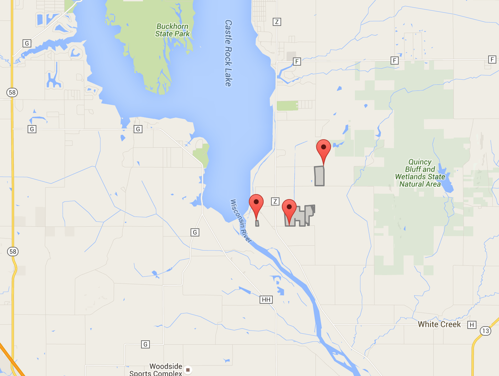
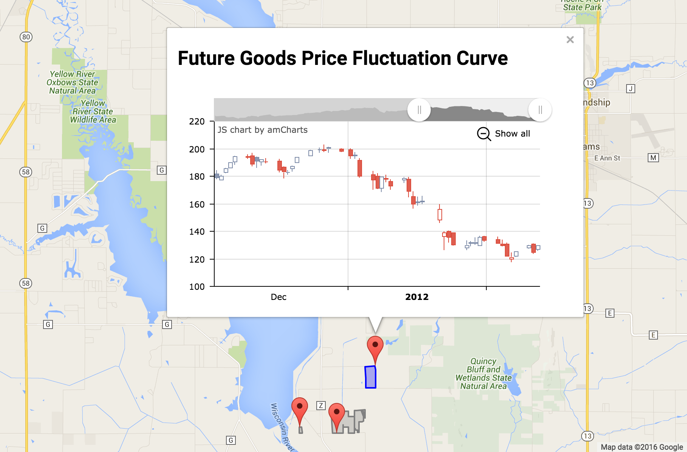
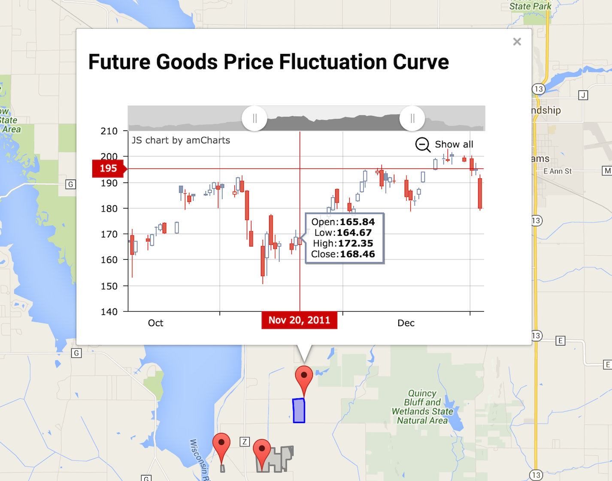

Teammates
Wenyi Lu, Ruxiao Bao, Can Wang, Guolong Li
Overview
This project is mainly divided into three parts.
-
The first part we realize the transferring of layers and getting the Authorization code using the Oauth API and Fields API offered by the Climate Corpration through this link, then using these APIs we could retrieve the information of Json Location information.
Then We transfer the Json information into Geojson Information using Javascript and .jQuery. Putting the json form polygon fields layers over the Google Map, this step is the foundation and aims to simulate the working condition of Climate.com platform.
-
The second part adds new features. We target at indicating the owner of this fields the information of Futures Price predicting and getting them informed with the strategy of choosing better plant to get more benefits. We use the API and data from https://www.quandl.com/blog/api-for-stock-data to fetch the data of most cash crop's futures price, and according to the information we suppose to retrieve from the field selected on the map, there would be a tooltip pop out indicating the current price of these planets. Instant message existing on the same page as the map of fields would leave deeper impression on the farmers.
-
For the stock information in the bubble, we visualize this part, adding sliders and other visulization tools to that, you could trace the history trend information using the slider, or check a specific node's data when your mouse hovering over this node. This part we use the JS library offered by amCharts, this is a rich open source library, I would recommend it to everyone if possible.
Setup And Step to Run
-
cd to the project path, run the python server using:
python -m SimpleHTTPServer
-
Open the url of
http://localhost:8000/commodity_chart_update.html
-
You could see several fields already imported in into the google map as a layer, all syncronized with one of our team member's account fields information using the fields API offered, you could select them, and there would be a drawing pin on it.
-
Click on the drawing pin and enjoy the tooltip's advantage fetching the futures information.
-
Hovering over the tooltip page to experience the visulization and stock price information dynamically offered to you.
Posters
-

P1: The google map layer would automatically syncronize the fields of one our teammates' account using the field API, all the fields our teammate selected would be transferred into a layer on Google Map
-

P2: When we select one of these fields, this one would change its color indicating it's already been selected,then pop a window showing the futures price related to the corps planted on this field.
-

P3: You could see rich information from the new page just popped out, just hover your mouse over this area, and you could also adjust the two buttons at the head of the stock graph to select the range to show the data. The farmers would easily get the information right now when they are considering what to plant for this year, for this field.
Features
- Syncronize a certain account's fields information into Google Map as a layer, making it easier for farmers to use their information freely
-
Import a plugin to get some more information and tips for the farmers using this platform, futures stock price information would be quite useful for the farmers to make a choice for the plants they choose, and better balance the supply and demand relation in public market.
Future consideration & Sum up
We originally intend also to make a plugin of calculator into the page, but just finished part of them considering the time limits, the idea is to consider all the parameters in this field, including weather, sunshine, soil,etc, and automatically calculate out the estimated production for this field in this whole year, and when you left click on the field , there would be another bubble popping out giving the advice, or automatically calculating out the predicted benefits for you in realtime. Now the right click popping out page we assign it to the stock page as shown above.
Acknowledgements
Thanks so much for the engineers in Climate Corp, they get in company with us for two nights and really helped us all a lot !!!